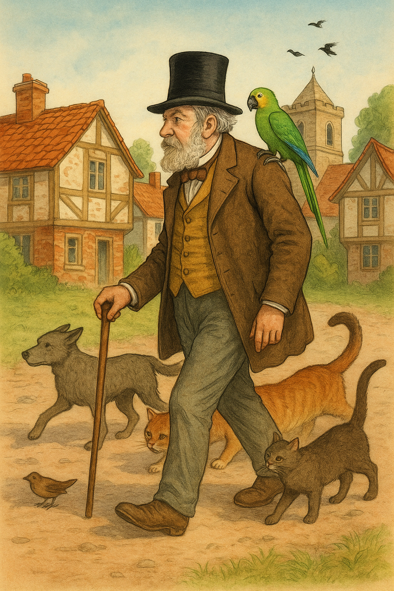

Dawno, dawno temu — kiedy nasi dziadkowie byli jeszcze zupełnie mali — żył sobie pewien doktor. Nazywał się Dolittle — a konkretnie dr med. John Dolittle, gdzie „dr med.” oznacza, że był doktorem medycyny z prawdziwego zdarzenia i wiedział całe mnóstwo różnych rzeczy.
Żył w Puddleby, niewielkim miasteczku położonym nad rzeką Marsh. Wszyscy tamtejsi mieszkańcy, młodzi czy starzy, znali go z widzenia. I zawsze, gdy przechadzał się ulicami w swoim cylindrze1, powtarzali: „Spójrzcie, idzie Doktor! Ten to ma łeb!”. Psy i dzieci podbiegały, żeby chodzić za nim krok w krok i nawet wrony, które mieszkały na wieży kościelnej, krakały z uznaniem na jego widok i grzecznie skłaniały głowy.
Dom Doktora, położony na obrzeżach mieściny, był raczej niewielki, otaczał go jednak rozległy ogród z trawnikiem, na którym — w cieniu wierzb płaczących — stały kamienne ławy. Domem zajmowała się siostra Doktora, Sara Dolittle, ale ogród pielęgnował zawsze on sam.
Bardzo lubił zwierzęta i miał ich wiele. W stawie, położonym na obrzeżach posesji2, hodował złote rybki, w spiżarni3 trzymał króliki, w pianinie białe myszki, w bieliźniarce4 wiewiórkę, a w piwnicy jeża. Miał też krowę z cielaczkiem i starego, kulawego konia, któremu stuknęły już 22 lata. A do tego kury, gołębie, dwa jagniątka i wiele innych zwierząt, ale najbardziej z nich wszystkich lubił kaczkę Dab-Dab, psa Dżipa, prosiaczka Gub-Gub, papugę Polinezję i sowę Tu-Tu.
 Rysunek 1. Doktor Dolittle na spacerze.
Siostra Doktora często narzekała, że przez te wszystkie zwierzaki w domu zawsze jest brudno. Co gorsza, zdarzyło się, że pewna starsza pani z reumatyzmem5, pacjentka Doktora, podczas wizyty przypadkiem usiadła na jeżu, który spał akurat na kanapie, i więcej już nie przyszła. Od tego czasu co sobotę jeździła do położonego o całe 15 kilometrów dalej miasteczka Oxenthorpe, do zupełnie innego lekarza.
Pewnego dnia siostra Doktora, Sara Dolittle, przyszła do niego i powiedziała:
— Johnie, czy naprawdę uważasz, że chorzy ludzie powinni przychodzić do domu pełnego zwierząt? Żaden szanujący się lekarz nie trzymałby w salonie stada jeży i myszy! Zwierzaki odstraszyły już czworo klientów! Dziedzic Jenkins oraz wielebny pastor mówią, że ich stopa więcej w tym domu nie postanie, choćby nawet mieli kopnąć w kalendarz! Biedniejemy z dnia na dzień. Jeśli tak dalej pójdzie, nikt ze śmietanki towarzyskiej nie zechce się u ciebie leczyć!
— Kiedy ja wolę zwierzęta od ludzi ze śmietanki — powiedział Doktor.
— Bzdury! — fuknęła jego siostra i wypadła z pokoju.
Czas mijał. Doktorowi wciąż przybywało zwierząt, a ubywało pacjentów. W końcu przychodził do niego już tylko Sprzedawca Mięsa dla Kotów, któremu zwierzaki w ogóle nie przeszkadzały. Tyle że Sprzedawca zwykle nie miał grosza przy duszy, a chorował tylko raz do roku — na Boże Narodzenie, kiedy płacił Doktorowi sześć pensów za flaszeczkę lekarstwa.
Trzeba wam wiedzieć, że nawet w owych czasach (dawno, dawno temu!) sześć pensów nie wystarczyło na życie, więc całe szczęście, że Doktor miał jeszcze co nieco w skarbonce! Ale kolejne zwierzęta, które wciąż przygarniał, trzeba było przecież karmić. Oszczędności topniały w oczach.
W końcu sprzedał swoje pianino, a myszom urządził przeprowadzkę do sekretarzyka, ale pieniądze, które w ten sposób zdobył, również nie starczyły na długo. Ostatecznie musiał pozbyć się nawet brązowego, odświętnego garnituru i tak, krok po kroku, biedniał coraz bardziej.
Teraz, gdy przechadzał się ulicami w swoim cylindrze, ludzie mówili do siebie: „Spójrzcie, idzie John Dolittle, doktor medycyny! Swego czasu był najsłynniejszym lekarzem w tej części kraju, a teraz? Co za widok! Nosi dziurawe skarpety i jest biedny jak mysz kościelna!”
Ale psy, koty i dzieci wciąż przybiegały, żeby chodzić za nim po mieście krok w krok, tak samo, jak kiedy był bogaty.
cylinder (z gr. kylindros: walec) — rodzaj wysokiego, sztywnego kapelusza z główką w kształcie walca i wąskim rondem, popularny wśród zamożniejszych warstw ludności Europy w XIX i na pocz. XX w.↩︎
posesja — posiadłość; wydzielony teren stanowiący czyjąś własność, wraz z budynkami na nim stojącymi.↩︎
spiżarnia — pomieszczenie w domu służące do przechowywania zapasów żywności.↩︎
bieliźniarka — szafka na bieliznę pościelową i stołową (pościel, obrusy, serwetki, poszewki itp.).↩︎
reumatyzm — choroba narządów ruchu powodująca bóle oraz zwyrodnienia i zniekształcenia stawów.↩︎